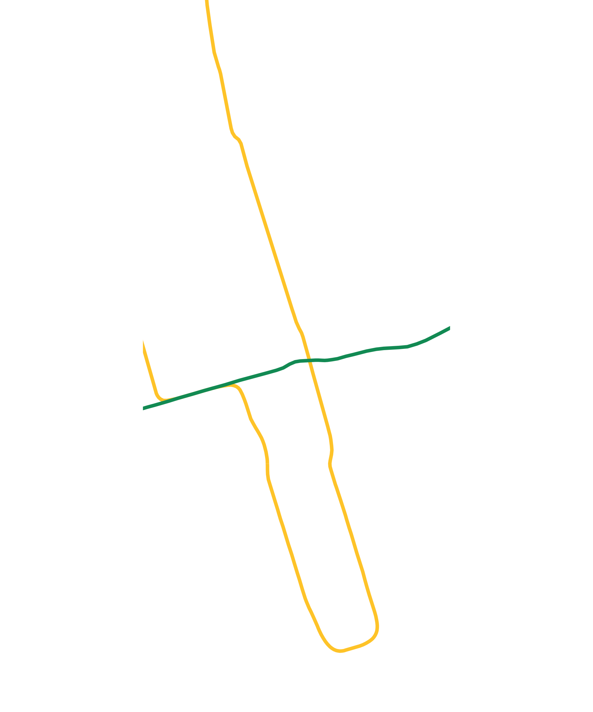
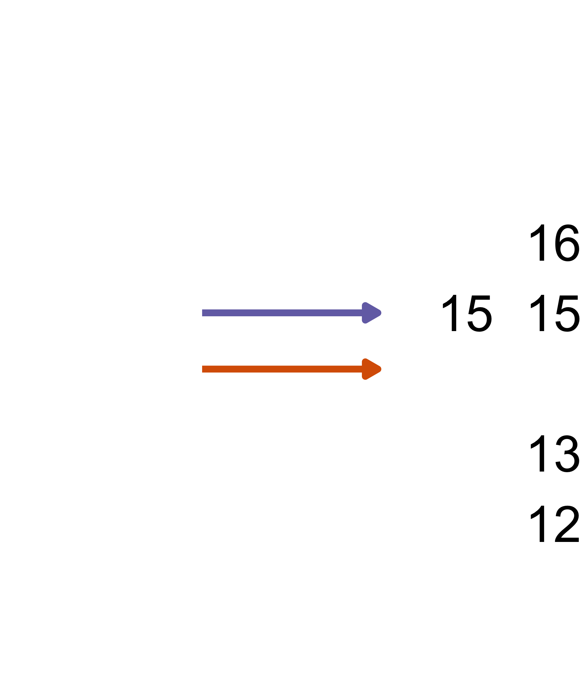
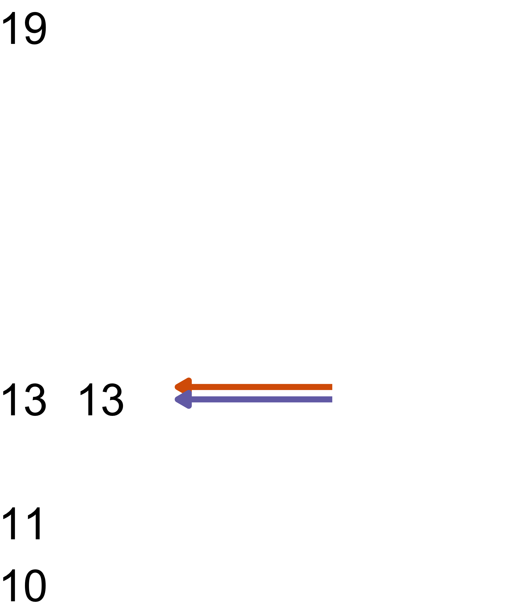
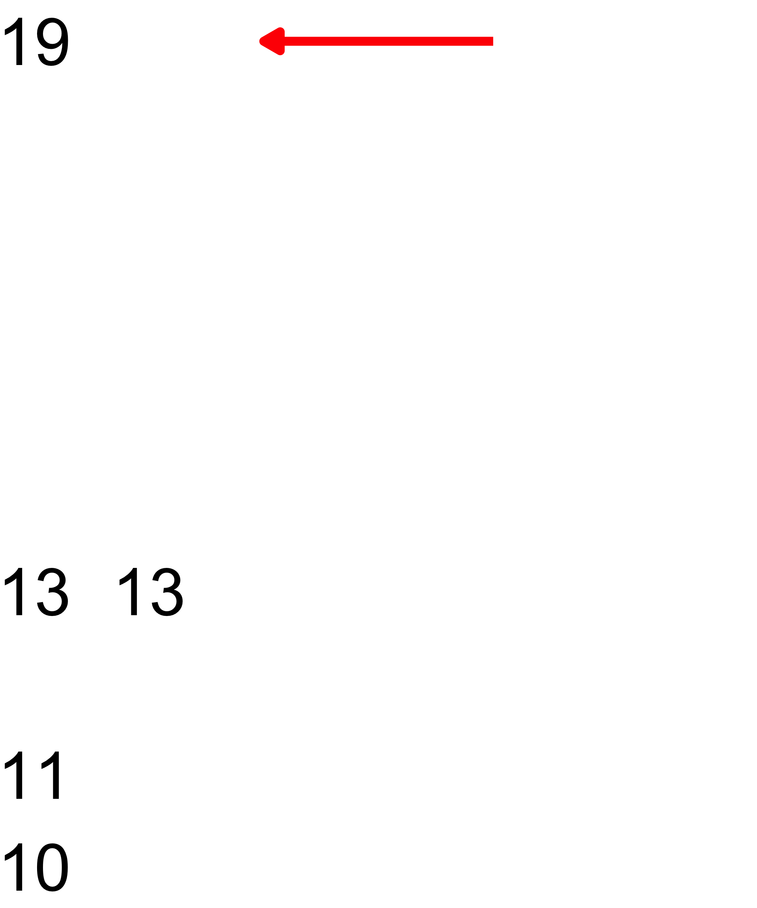
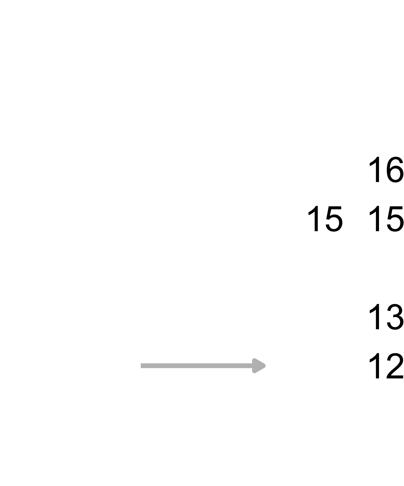
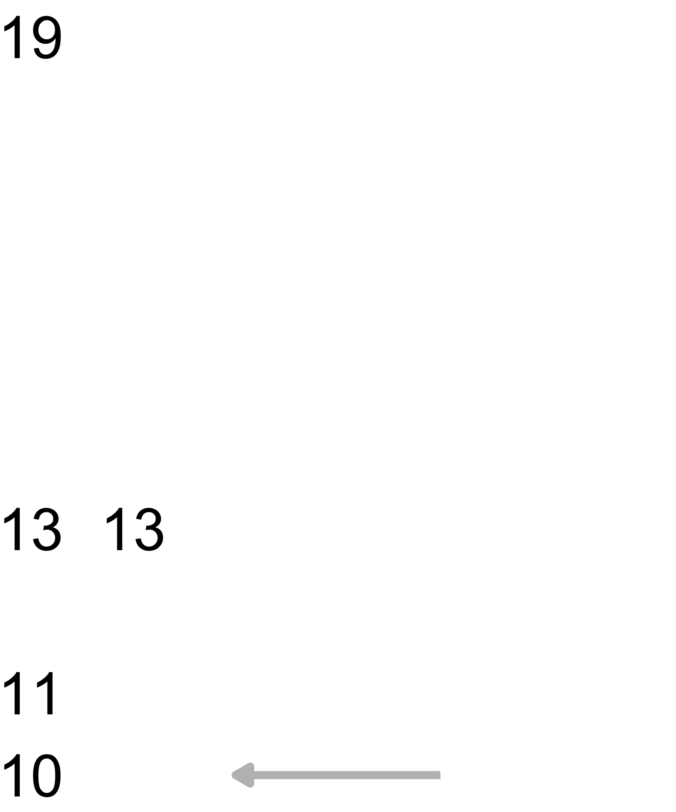
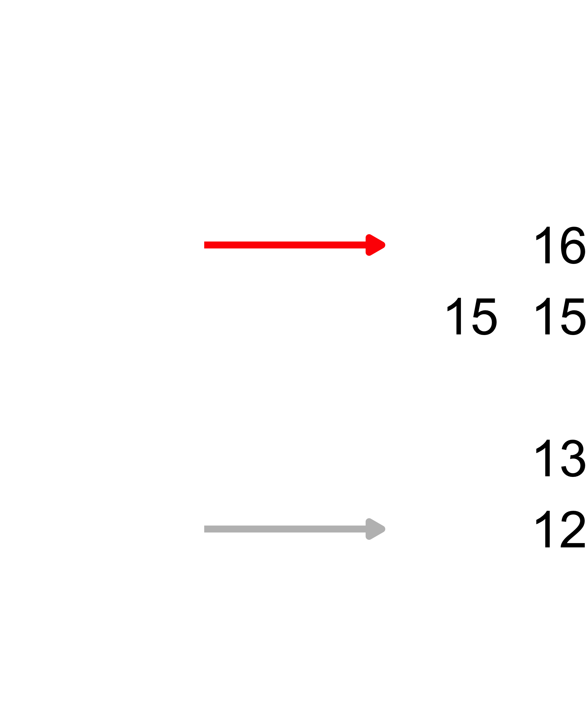
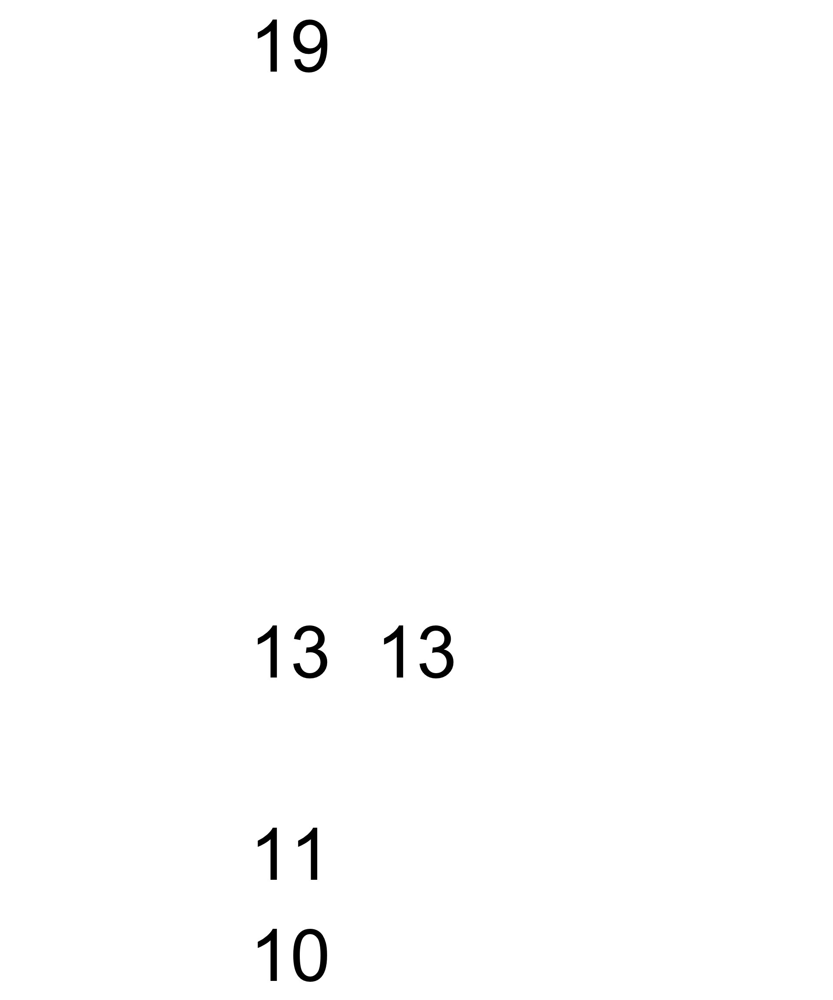
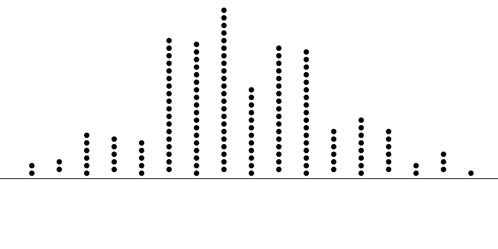

Week 1: Introduction & Numerical EDA
STA238: Probability, Statistics, and Data Analysis II
Michael Jongho Moon
January 8, 2026
Example: Lazy commute
Walk across College St.
\[13\quad15\quad15\quad12\quad16\]
Take TTC to Queen’s Park Stn.
\[10\quad13\quad19\quad13\quad11\]
(minutes)
Example: Lazy commute
Walk
TTC


Mean | Median
I might be late for class if I trusted TTC would make it within the “typical” times every time.
Example: Lazy commute
Walk
TTC


I should perhaps care more about the maximum travel time.
Example: Lazy commute
Walk
TTC


Or, I might just care about the minimum travel time when feeling lucky (or when I am not particularly in a hurry).
Order statistics
Special cases:
\[\min(x_1,\ldots, x_n)=x_{(1)}\]
\[\max(x_1,\ldots, x_n)=x_{(n)}\]
The data set arranged from smallest to the largest is called the order statistics. We denote orders statistics as
\[\left\{x_{(1)}, x_{(2)}, \ldots, x_{(n)}\right\}\]
such that
\[x_{(k-1)}\le x_{(x)} \le x_{(k+1)}\] \[\quad\forall\ k\in2,3,\ldots,n-1.\]
Median, revisited
\[\text{Med}_n=\begin{cases}\ {} \\ {} &\text{if}\quad n\in 2k+1 \\ \_\_\_\_\_\_\_\_\_\_\_\_\_\_\_\_\_\_\_\_ \\ {} \\ {} &\text{if}\quad n\in 2k \\ \_\_\_\_\_\_\_\_\_\_\_\_\_\_\_\_\_\_\_\_ \end{cases}\] where \(k\in\mathbb{N}\).
Example: Lazy commute
Walk
Order statistics

Empirical quantiles
- Median is ___________.
- \(y\)th percentile is \(p\)th quantile where \(y=p\times 100\).
- Quartiles —
lower quartile = \(q_n(1/4)\) and
upper quartile = \(q_n(3/4)\) - “Empirical” emphasizes the quantities are based on observed data.
The \(p\)th empirical quantile, denoted \[q_n(p),\] is the number such that the proportion of the data set below \(q_n(p)\) is \(p\).
Empirical quantiles
One way to compute \(q_n(p)\) is by setting \(\displaystyle x_{(i)}=q_n\left(\frac{i}{n+1}\right)\) for \(i=1,...,n\) and interpolating between the observed values using:
\[q_n(p) = x_{(k)} + \alpha(x_{(k+1)} - x_{(k)})\]
with \(k=\lfloor p(n+1) \rfloor\) and \(\alpha=p(n+1) - k\).
Empirical quantiles
One way to compute \(q_n(p)\) is by setting \(\displaystyle x_{(i)}=q_n\left(\frac{i}{n+1}\right)\) for \(i=1,...,n\) and interpolating between the observed values using:
\[q_n(p) = x_{(k)} + \alpha(x_{(k+1)} - x_{(k)})\]
with \(k=\lfloor p(n+1) \rfloor\) and \(\alpha=p(n+1) - k\).
TTC

Empirical quantiles
One way to compute \(q_n(p)\) is by setting \(\displaystyle x_{(i)}=q_n\left(\frac{i}{n+1}\right)\) for \(i=1,...,n\) and interpolating between the observed values using:
\[q_n(p) = x_{(k)} + \alpha(x_{(k+1)} - x_{(k)})\]
with \(k=\lfloor p(n+1) \rfloor\) and \(\alpha=p(n+1) - k\).
\[q_5(1/6)=10\]
\[q_5(2/6)=11\]
\[q_5(3/6)=13\]
\[q_5(4/6)=13\]
\[q_5(5/6)=19\]
\[q_5(0.3)=?\]
Empirical quantiles
One way to compute \(q_n(p)\) is by setting \(\displaystyle x_{(i)}=q_n\left(\frac{i}{n+1}\right)\) for \(i=1,...,n\) and interpolating between the observed values using:
\[q_n(p) = x_{(k)} + \alpha(x_{(k+1)} - x_{(k)})\]
with \(k=\lfloor p(n+1) \rfloor\) and \(\alpha=p(n+1) - k\).
This is not the only way to compute the empirical quantiles.
Different methods exist to mimic the quantile function of a distribution, \(q(p)=\inf\{x\in\mathbb{R}:p\le F(x)\}\)
(the smallest value \(x\) that satisfies \(p\le F(x)=P(X\le x)\))
Five-number summary
Minimum, ________
Lower quartile, ________
Median, ________
Upper quartile, ________
Maximum, ________
Summarising data: The spread of data
How variable or consistent are the values?
- Interquartile range
- Sample variance
- Sample standard deviation
- Median absolute deviation (MAD)
How to describe variability

- The simplest method would be to measure the range, \[(x_{(n)}-x_{(1)}).\]
- We are often also interested in the range of typical values.
Interquartile range
Interquartile range (IQR) is the distance between upper and lower quartiles. In other words,
\[\text{IQR} = q_n(0.75) - q_n(0.25).\]
50% of observed values of any data set lie within its IQR.
Interquartile range
Interquartile range (IQR) is the distance between upper and lower quartiles. In other words,
\[\text{IQR} = q_n(0.75) - q_n(0.25).\]
TTC

Recap: Quantifying the spread of a distribution
Recall that we use _______________________ to measure the variability of a random variable, \(X\).
Recap: Quantifying the spread of a distribution
Recall that we use _______________________ to measure the variability of a random variable, \(X\).
\[\text{Var}(X)=\mathbb{E}\left[\left(X-\mathbb{E}\left[X\right]\right)^2\right]\]
- The expected squared distance from its center.
How would you define an analogous quantity with observed data values, \(x_1, x_2, \ldots, x_n\)?
i.e., how can we measure the amount of variability around the sample mean in a data set?
Sample variance
- One way to quantify the amount of spread in a data set.
- Assigns an equal weight to the squared distance of each observed value from the sample mean.
- The reason for the weight, \(1/(n-1)\), will be discussed later in the course.
The sample variance of a data set, \(x_1, x_2, \ldots, x_n\), is defined by
\[s_n^2=\frac{1}{n-1}\sum_{i=1}^n\left(x_i -\bar{x}_n\right)^2\]
where \(\bar{x}_n\) is the sample mean.
Sample standard deviation
- Analogous to the standard deviation of a random variable as the name suggests.
The sample standard deviation of a data set, \(x_1, x_2, \ldots, x_n\), is defined by
\[s_n=\phantom{a}s_n^2=\phantom{\sqrt{\frac{1}{n-1}\sum_{i=1}^n\left(x_i -\bar{x}_n\right)^2}}\]
where \(\bar{x}_n\) is the sample mean.
Exercises
Find the sample variance and sample standard deviation of the following data sets:
\[\{5, 10, 8, 7\}\]
| Value | Observed frequency |
|---|---|
| 0 | 2 |
| 1 | 3 |
| 2 | 5 |
Exercises
Find the sample variance and sample standard deviation of the following data sets:
Median absolute deviation
- Instead of weighted sum, MAD uses median operation.
- Instead of squared values, MAD uses absolute values.
The median absolute deviation, or MAD, of a data set, \(x_1, x_2, \ldots, x_n\), is defined by
\[\text{MAD}(x_1,x_2,\ldots,x_n)\] \[=\text{Med}(\lvert x_1-\text{Med}_n\rvert,\lvert x_2-\text{Med}_n\rvert,\] \[\quad\ldots,\lvert x_n-\text{Med}_n\rvert)\]
where \(\text{Med}_n\) is the sample median and \(\text{Med}(a_1, a_2,\ldots,a_n)\) is the median of the sequence of values \(a_1, a_2,\ldots,a_n\).
Exercises
Find the median absolute deviance of the following data sets:
\[\{5, 10, 8, 7\}\]
Example: TTC Delays
# 2022 TTC delays longer than 1 minute
# from Open Data Toronto https://open.toronto.ca
ttc_delays |>
filter(
# Yonge-University and Bloor-Danforth lines
Line %in% c("YU", "BD")
) |>
group_by(Line) |>
summarise(
a = quantile(Min.Delay, .25),
b = mean(Min.Delay),
c = median(Min.Delay),
d = quantile(Min.Delay, .75),
e = var(Min.Delay),
f = n()
)| Line | a | b | c | d | e | f |
|---|---|---|---|---|---|---|
| BD | 4 | 8.77 | 5 | 8 | 314.35 | 2869 |
| YU | 3 | 7.25 | 5 | 7 | 141.97 | 5182 |
Example: TTC Delays
In 2022, of Bloor-Danforth (BD) and
Yonge-University (YU) lines,
- Which line experienced more delays?
- Which line experienced typically longer delays?
- Which line experienced more predictable delays?
- Which line experienced the most extreme delay?
| Line | a | b | c | d | e | f |
|---|---|---|---|---|---|---|
| BD | 4 | 8.77 | 5 | 8 | 314.35 | 2869 |
| YU | 3 | 7.25 | 5 | 7 | 141.97 | 5182 |
Example: TTC Delays
Of Bloor-Danforth (BD) and
Yonge-University (YU) lines,
- Which line experiences more delays?
- Which line experiences typically longer delays?
- Which line experiences more predictable delays?
| Line | Median | Variance | Count |
|---|---|---|---|
| BD | 5 | 314.35 | 2869 |
| YU | 5 | 141.97 | 5182 |
| Line | Median | Variance | Count |
|---|---|---|---|
| BD | 5 | 465.76 | 3419 |
| YU | 5 | 121.70 | 5681 |
Summary
- A single numerical summary doesn’t tell us the full picture of a data set.
- Different summaries can reveal different characteristics about the observed data.
- These descriptive statistics can provide useful insights about unknown parameters in the population of interest.
© 2026. Michael J. Moon. University of Toronto.
Sharing, posting, selling, or using this material outside of your personal use in this course is NOT permitted under any circumstances.